Humans are not the first intelligence to live on “our” planet earth. There have been many others. Sentience is a complex subject, don’t you know.
Some still exist and we share the earth with them. Some have passed on, either evolving into something different or dying off. Some use and create tools, others just exist within a reality that we, as humans, cannot comprehend. For to us, they seem like nothing other than ambulatory vegetables.
Let’s take a moment to discuss, what I believe to be, the very first intelligent naturally evolved life on the earth; the Cephalopods.
What is Intelligence?
Before we dive into a discussion about Cephalopods, let’s make one thing perfectly clear. Whether a given species is intelligent or not is an arbitrary construct. There is no sharp and clear debarkation line that is evidence for intelligence or the lack of it.
My contention that Cephalopods are intelligent with defined sentience is debatable. Indeed, but the argument for and against it is for others to debate off-line at another time and in another place.
Introduction
Cephalopods evolved during the Cambrian period when the moon went in orbit around the earth. They thrived, and became dominant during the Ordovician period, represented by primitive nautiloids. They evolved over the centuries. Today, they are represented by two subclasses;
- Coleoidea, which includes octopuses, squid, and cuttlefish.
- Nautiloidea, represented by Nautilus and Allonautilus.
The Coleoidea has no shell. The Nautiloidea has an external shell.
It is difficult to define when intelligence first sparked within this species. What we can say is that over a long swath of time, various elements of intelligence began to manifest. My guess is that it began to form in the more populous taxa of the Ammonoidea (ammonites) and Belemnoidea (belemnites).
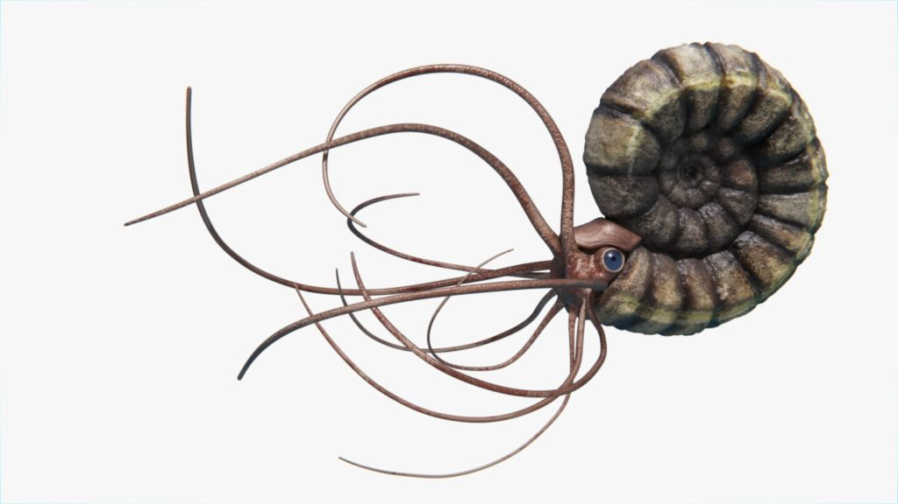
The Cambrian Age
"The Ediacaran and Cambrian periods witnessed a phase of morphological innovation in animal evolution unrivaled in metazoan history, yet the proximate causes of this body plan revolution remain decidedly murky. The grand puzzle of the Cambrian explosion surely must rank as one of the most important outstanding mysteries in evolutionary biology. Evidence of early representatives of all the major animal phyla first appear abruptly in the Cambrian (starting 542 million years ago). This spectacular morphological diversity contrasts strongly with Precambrian deposits, which have yielded a sparse fossil record with small, morphologically ambiguous trace fossils or the enigmatic but elegant creatures of the Ediacaran fauna. Following the Cambrian, despite a rich fossil record that documents impressive morphological diversification among animals, no new body plans have been revealed, leaving the Cambrian as the apparent crucible of metazoan body plan innovation." -Creation / Evolution Headlines
The Cambrian period is a very long time ago. In fact, it is around 541–485.4 million years ago. (Let’s simply refer to the date as 540 million years ago.) At that time, the earth was mostly ocean. The continents were, as we can best tell, centered around the south pole. Leaving a comfortable bulk of the world covered by ocean.
The earth was, at that time, a ocean world with some notable mini-continents.
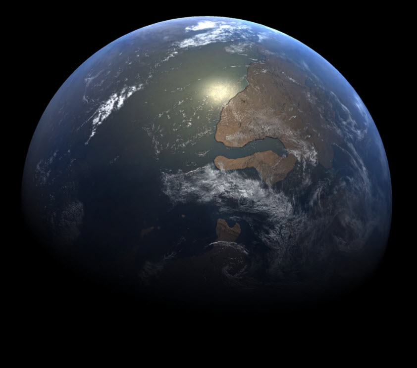
It was a warm time.
The overall world weather was rather warm. The equator was pretty darn hot, and the poles were both comfortable in temperature. There wasn’t any glaciation.
The various landmasses present at that time were scattered about. (This all was a result of the fragmentation of the super-continent Rodinia that had existed in the late Proterozoic.) There were a number of (more or less) significant landmasses. Though, most of the of the continents were joined together to form the super-continent Gondwana
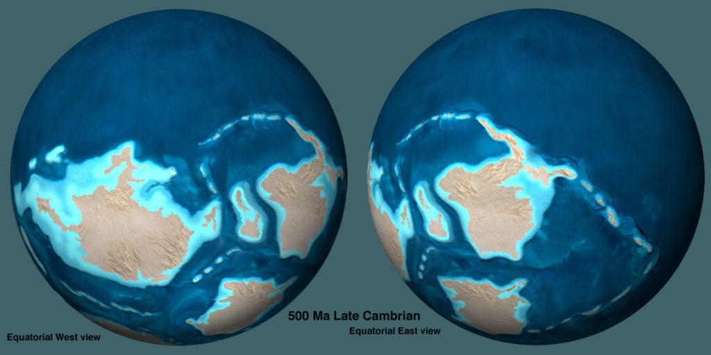
Prior to the Cambrian, the earth was not at all like we would assume it to be. It consisted of a very lively aquatic biosphere, and a terribly barren terrestrial land biosphere. The land masses were all barren and devoid of most life.
There were no animals. There were no insects. There were no flowers. There were no trees, nor grasses. There might have been a moss or two about, but that was about it. The differences between the two biospheres were too extreme. Nothing in the aquatic biosphere could breach the shore and make it’s way onto land. It was a white and black world with no shades of grey anywhere (figuratively speaking).
Then suddenly something happened…
The Cambrian Explosion
This period of time; the Cambrian Period, was a very important point in the history of life on Earth. It was notable in that it was the time when land animals first began to appear. This event is sometimes called the “Cambrian Explosion,” because of the relatively short time that the animals began to appear. It was like “an explosion”.
It was around a half a billion years ago. (I would say that 540 million years is pretty close to half a billion years.) Now, this is a very, very long time ago.
Prior to this time, the bulk of life was from the seas and oceans. There, the life grew and flourished. However it took some time for the life to leave the shores. At that time the oceans were teeming with life. There were jellyfish, marine creatures of all shapes and sizes and fishes. Yet the land was barren except for some life near the coasts.
Then SUDDENLY, out of the blue, life began to appear. It wasn’t that it started to appear from zero to full and dense populations. No. Instead, when we refer to life appearing; we actually are referring to “life appearing on land”.
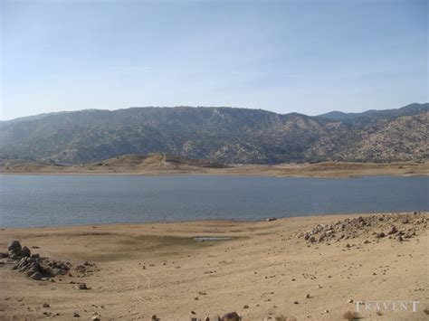
You see, up until the Cambrian period, the earth consisted of two completely separate biospheres. There was the [1] aquatic biosphere, and there was [2] the land biosphere. They were independent and distinct. Fish did not walk on the land, no shellfish climbed up on the hot rocks near the water. No life was on the land.
The [1] aquatic biosphere was relatively easy to start early life within. It was a crucible. We know, now today, that when you have water and heat, you can generally generate microorganisms. Over time they can increase in number and diversify.
The [2] land biosphere was something different. There just wasn’t any kind of crucible or nursery for the growth or evolution of land life. The only way that this could occur was through transport from the [1] aquatic biosphere. That could not happen.
There was no mechanism to ignite life on the barren soil of the [2] land biosphere.
A Need for Tides
The time immediately before the Cambrian period is suggestive of a period when there just wasn’t any moon present. The earth sat alone without any large orbiting bodies. As a result, there were no tides and no waves. The ocean was a large still body. The only movement on the water was through the sea and ocean currents and the climate at the time.
Tides are created when a large planetary body is near another planetary body. This can be like the moon orbiting the earth, or more commonly, like a planet in close orbit around a brown / red dwarf or class K star.
The gravitation of the nearby body causes the liquid on the neighboring planet to move. This in turn, causes tides that ebb and flow. It causes periods of wet and dry surfaces where creatures from the [1] aquatic biosphere can evolve to move to a [2] land biosphere. Indeed, large planetary masses are necessary for biological evolution.
Large planetary masses are necessary for biological evolution.
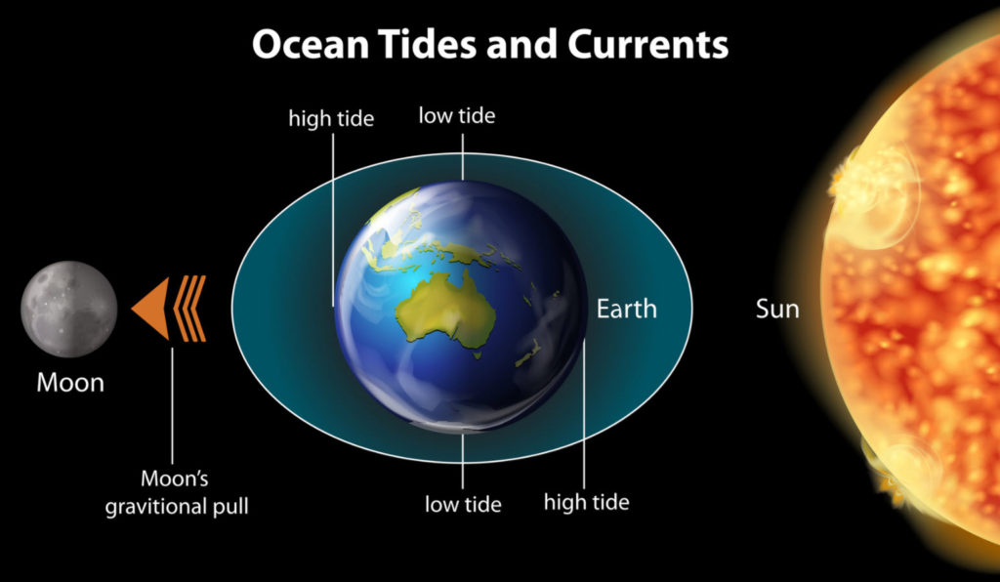
I contend, for many reasons not listed here, that the moon was “placed” in orbit around the earth during the Cambrian. This placement created an environment that was friendly for the evolution and porting of life from the [1] aquatic biosphere to the [2] land biosphere.
- I would suggest any one interested in following this “theory” further, please read my blog post about The Hollow Moon.

 that damaged a vessel (of some type). Over the years it has become buried in silt, which later turned into stone. Here we study this issue.")
- It also explains WHY there was a sudden and rapid “Cambrian Explosion“.
The Presence of the Moon Changed Everything
In contrast to later periods, the Cambrian fauna was somewhat more restricted; indeed free-floating organisms such as jellyfish were actually rare during this time. This was quite unlike the earlier era where there were large swarms of jellyfish, in many sizes (including super-jumbo).
Those earlier life forms that did survive ended up living on or close to the sea floor. Due to catastrophic events that affected the native life forms, mineralizing animals became rarer than in future periods. This was due, in part, to the unfavorable ocean chemistry prevalent at the time.
One of the mysteries of the Cambrian is why there was a jump in the concentration of sulphate in the world's oceans. However, in the Proceedings of the National Academy of Sciences, Canfield and Farquhar attribute the rise in sulphate to the onset of bioturbidity. Or in other words, the burrowing, sluicing, pumping and mixing caused by masses of worms, clams, crustaceans and other animals that began to appear around this time in Earth's history. Personally, I sit amusedly on the sidelines on this argument. I think all the theories are quite interesting, though a bit over my head. I graciously leave the arguments to those scientists that are far better versed to make these determinations than I am.
The Earth gets a Moon
At a time, around 540 Million years ago, plus of minus 20 million years or so, the presence of the moon created the Cambrian explosion where life began to exist upon the barren landmasses of earth. The moon did not suddenly come into being. It entered orbit with long elliptical swings coming close to the surface of the earth and then swinging away from it. This period of orbital instability lasted millions of years.
485 Ma – Ordovician period
"…the truth is out there," (concerning UFOs) — John Podesta (Quoted in The Washington Post)
Following the 56 million year period of the Cambrian period, began the Ordovician period.
The reader should realize that the Cambrian was one of great promise and even greater disappointment. At that time the earth was rocked with a long series of extinction events; all of which left painful “footprints” on the biodiversity of native lifeforms. Earth during the Cambrian was a contentious time, but this all began to change. The changes were remarkable and are forever recorded in the history books as the Ordovician period.
This period of time lasted from 485 to 443 million years ago. Life continued to flourish during the Ordovician as it did in the beginning of the Cambrian. But the flourishing of life during this period apparently was much more successful. The long term extinctions found during the Cambrian was absent here, as was the apparent frequency of mass extinctions. However and ultimately (unfortunately), the end of the period was marked by a very significant mass extinction.
Life Forms
During this period of time, life (still) had yet to fully and completely diversify on land. While there were forays onto the land during this period, the great diversity of land based life was still limited. For the most part, fishes and other creatures remained in the ocean and scant few still had yet to expand upon the land. As in the Cambrian, invertebrate; mostly types of mollusks and various arthropods, dominated the oceans. Fish, the world’s first true vertebrates, continued to evolve, and those with jaws may have first appeared late in the period (maybe around 450 Ma). This was still a world of bare rocky land masses, yet there were elements of the beginnings of land based plants; Larger than mere fungi, mosses and other small plants. Perhaps the first ferns began to make their appearance, as well as other (simpler) plants.
What this manifested as was wondrous. This was a time of extreme biodiversity in the seas; because the harsh destruction of life during the Cambrian was permitted to lapse, and in its stead was a great rebirth and reintroduction of “new” and “improved” life forms.
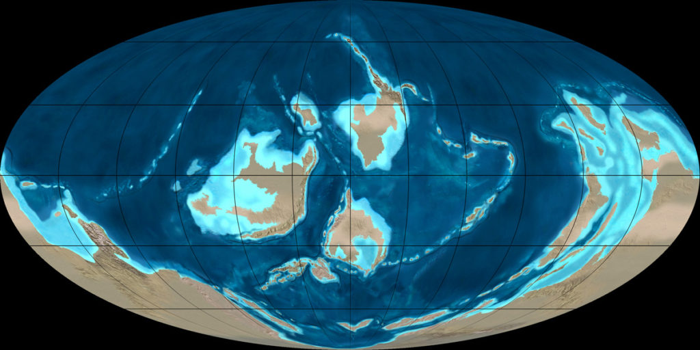
It is generally considered that this period was full of various unknown and poorly understood creatures because most were soft shelled, and thus did not fossilize readily. But that has changed in the last number of years, as “soft shelled” fossils had been discovered from the Ordovician period.
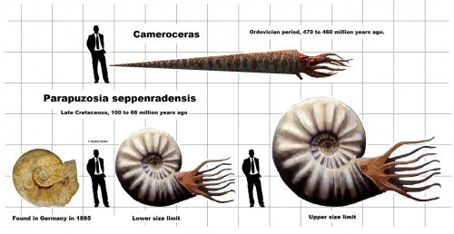
Discoveries in the Fezouata Biota, holds some of the oldest known marine animals on Earth. In it, troves of detailed Ordovician fossils were found that had fossilized “soft tissues”. This is an amazing rarity in the world of anthropology. And, this has given scientists an amazing look into the world of the Ordovician period. This has enabled scientists to conduct studies on arthropods such as anomalocaridids, cheloniellids and marrellomorphs. Not to mention the very interesting and terrifying armored, wormlike creature (Plumulites bengtsoni) and a giant, filter-feeding arthropod (Aegirocassis benmoulae).
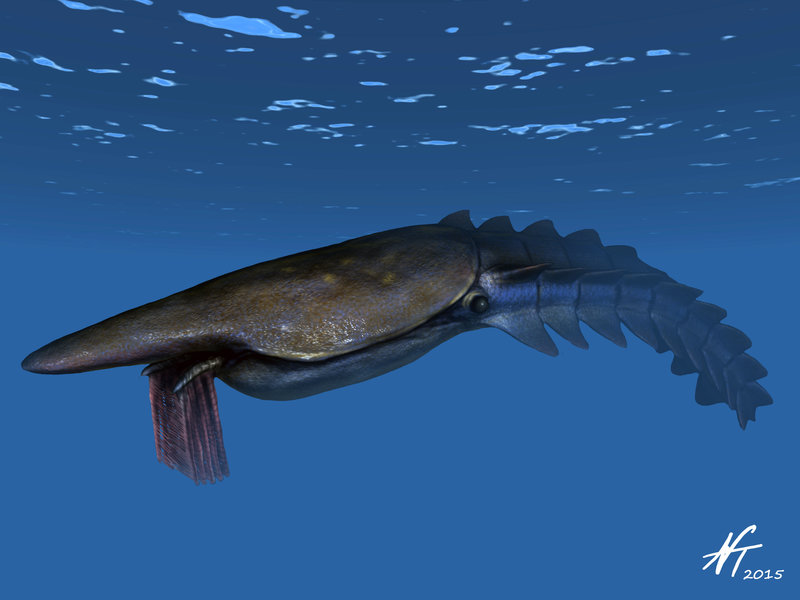
We now today that the anomalocaridids, an ancestor of modern-day arthropods such as butterflies and spiders, are thought to have lived and died during the Cambrian, but they survived for yet another 25 million years.
- Read about the discovery of soft-skinned fossils from the Fezouata Biota HERE.
The Age of the Fishes
During the Ordovician period existed a wonderland of great marine diversity. Creatures consisting of invertebrates that diversified into many new types (e.g., long straight-shelled cephalopods). Early corals, articulate brachiopods (Orthida, Strophomenida, etc.), bivalves, nautiloids, trilobites, ostracods, bryozoa, many types of echinoderms (crinoids, cystoids, starfish, etc.), branched graptolites, and other taxa all became quite common.
The seas became full of such a great variety of life that it was a wonderland of amazement. One can only imagine what it must have been like. I would imagine a wonderland of all kinds of corals with a multitude and variety of fishes and other marine life. I also imagine that the world is still dominated by many soft skinned and soft boned creatures such as jellyfish which most certainly added to the great color and display of life at that time.
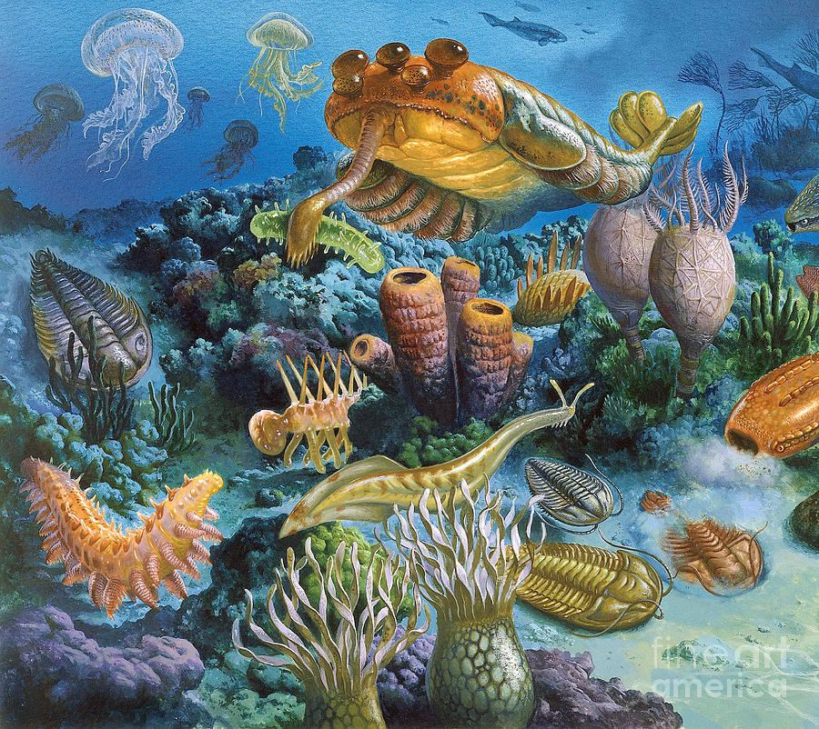
Articulate brachiopods have toothed hinges and simple opening and closing muscles, while inarticulate brachiopods have untoothed hinges and a more complex system of muscles used to keep the two halves aligned. In a typical brachiopod a stalk-like pedicle projects from an opening in one of the valves, known as the pedicle valve, attaching the animal to the seabed but clear of silt that would obstruct the opening. The Bivalvia comprise a class of marine and freshwater molluscs that have laterally compressed bodies enclosed by a shell consisting of two hinged parts. They have no head, and they also lack a radula. Bivalves include clams, oysters, cockles, mussels, scallops, and numerous other families that live in saltwater, and well as a number of families that live in freshwater. Nautiloids are a large and diverse group of marine cephalopods (Mollusca) belonging to the subclass Nautiloidea that began in the Late Cambrian and are represented today by the living Nautilus and Allonautilus. Nautiloids flourished during the early Paleozoic era, where they constituted the main predatory animals, and developed an extraordinary diversity of shell shapes and forms. Some 2,500 species of fossil nautiloids are known, but only a handful of species survive to the present day.
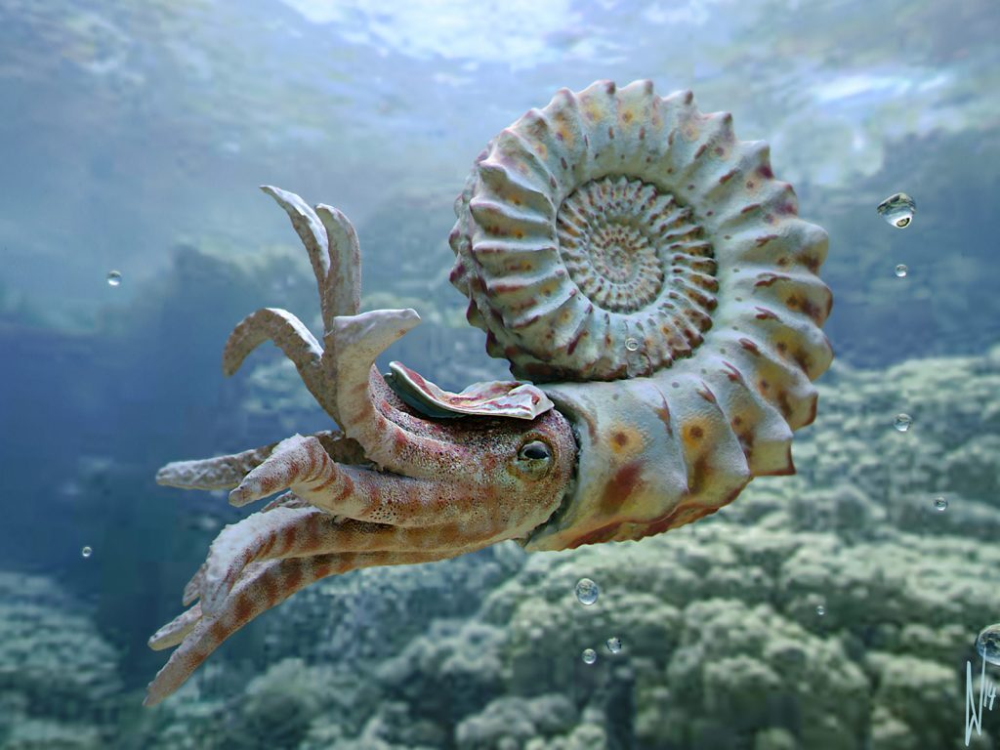
Trilobites are a well-known fossil group of extinct marine arthropods that form the class Trilobita. Trilobites form one of the earliest known groups of arthropods. The first appearance of trilobites in the fossil record defines the base of the Atdabanian stage of the Early Cambrian period (521 million years ago), and they flourished throughout the lower Paleozoic era before beginning a drawn-out decline to extinction when, during the Devonian, all trilobite orders except Proetida died out. Trilobites finally disappeared in the mass extinction at the end of the Permian about 250 million years ago. The trilobites were among the most successful of all early animals, roaming the oceans for over 270 million years. Ostracods, or ostracodes, are a class of the Crustacea (class Ostracoda), sometimes known as seed shrimp. Some 70,000 species (only 13,000 of which are extant) have been identified, grouped into several orders. They are small crustaceans, typically around 1 mm (0.039 in) in size, but varying from 0.2 to 30 mm (0.0079 to 1.1811 in) in the case of Gigantocypris. Their bodies are flattened from side to side and protected by a bivalve-like, chitinous or calcareous valve or "shell". The hinge of the two valves is in the upper (dorsal) region of the body. Ostracods are grouped together based on gross morphology, but the group may not be monophyletic; their molecular phylogeny remains ambiguous. The Bryozoa, also known as Polyzoa, Ectoprocta or commonly as moss animals, are a phylum of aquatic invertebrate animals. Typically about 0.5 millimetres (0.020 in) long, they are filter feeders that sieve food particles out of the water using a retractable lophophore, a "crown" of tentacles lined with cilia. Echinoderms are a phylum of marine animals. The adults are recognizable by their (usually five-point) radial symmetry, and include such well-known animals as starfish, sea urchins, sand dollars, and sea cucumbers. Crinoids are marine animals that make up the class Crinoidea of the echinoderms (phylum Echinodermata). They live both in shallow water and in depths as great as 6,000 metres. Sea lilies refer to the crinoids which, in their adult form, are attached to the sea bottom by a stalk. Feather stars or comatulids refer to the unstalked forms.
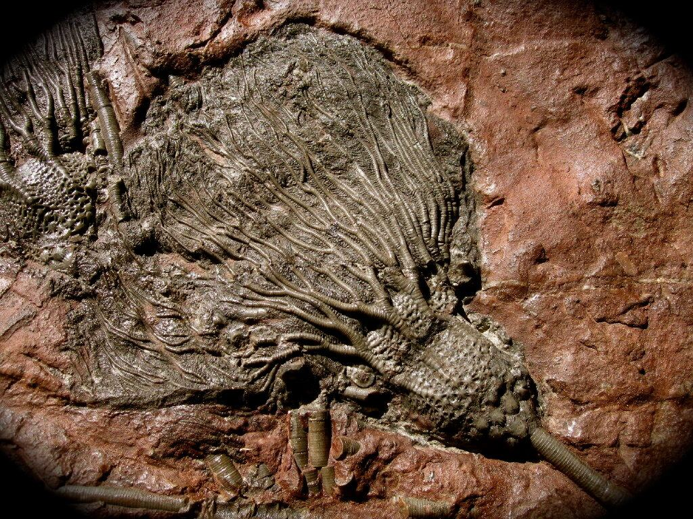
Graptolithina is a class in the animal phylum Hemichordata, the members of which are known as graptolites. Graptolites are fossil colonial animals known chiefly from the Upper Cambrian through the Lower Carboniferous (Mississippian).
Atmosphere
The atmosphere continued to change during this time, and the amount of oxygen continued to increase. Through most of this period the oxygen level was only about 68 % of our current modern level. Mean atmospheric CO2 content was still at 15 times our current (pre-industrial) level. The air, to us humans today, would be considered rather stinky and polluted.
But that doesn’t really matter. Nothing really lived on the land breathing the air. The vast bulk of life was underwater; in the seas and oceans.
It was a warmer time.
For most of the Ordovician period, global conditions were as stifling as during the preceding Cambrian; air temperatures averaged about 120 degrees Fahrenheit worldwide, and sea temperatures may have reached as high as 110 degrees at the equator.
It is unlikely that there were any ice caps at either the north or south poles.
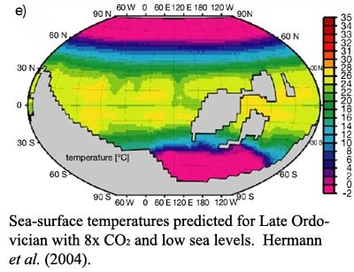
Super-Bugs
Leading hospital “superbugs,” known as the enterococci were spawned at this time. They arose from an ancestor that dates back 450 million years according to a study led by researchers from Massachusetts Eye and Ear.
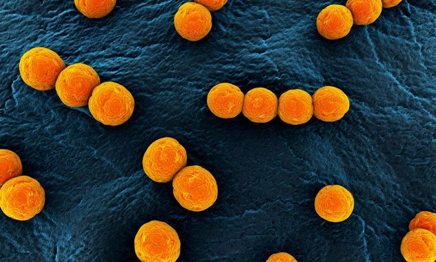
The results of this study was published online in Cell. In the study authors shed light on the evolutionary history of these pathogens. They evolved nearly indestructible properties and have become leading causes of modern antibiotic-resistant infections in hospitals. Read about it HERE.
Extinction Events
The Ordovician Period consists of life on the Earth between two major extinction events. The period started at a major extinction event known as the Cambrian–Ordovician extinction event. It occurred about 485 Ma (million years ago), and started this period; the Ordovician period which lasted for about 44.6 million years. This event terminated at the Cambrian period at the 490 Ma date. For purposes of convenience, scholars define the termination of this period by another extinction event. The Ordovician period ended with the Ordovician–Silurian extinction event.
The Ordovician period started with the Cambrian–Ordovician extinction event. The Ordovician period ended with the Ordovician–Silurian extinction event.
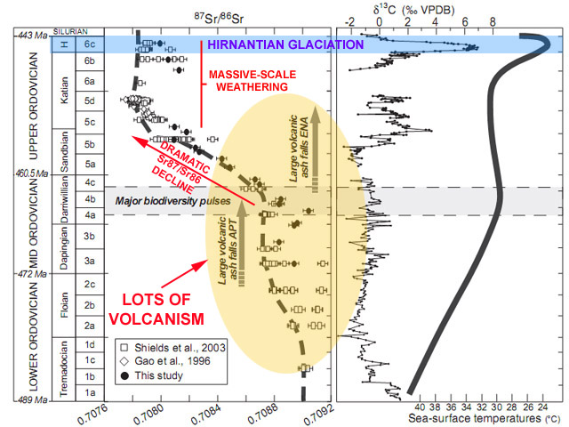
There are many interesting theories regarding these extinction events.
Some posit that there is a “dark” (visually undetected) companion to our solar system that pulls or propels stellar objects from the Oort cloud to plummet upon the earth. Others argue that the larger gas giants, namely Jupiter exerts gravitational influences that hurl rocky bodies out of the solar system and some cycle back to eventually hit the earth.
A particularly interesting theory regards the presence of dark matter in and about our galaxy, and how the orbit of our solar system up and down; in and out of the galactic plane causes dark-matter gravitational influences on stellar or rocky bodies is particularly intriguing. This theory is by Lisa Randall, a theoretical physicist at Harvard University. She puts forth a curious and interesting theory for periodic mass extinctions, which she describes in her book, “Dark Matter and the Dinosaurs.”
Cambrian–Ordovician extinction event
To study and observe this period we should start at the beginning. Let’s start at the end of the Cambrian Period. Geologists refer to this period as the delineation line between the Cambrian Period and the Ordovician Period. It is most noteworthy due to a rather large extinction that occurred at that time.
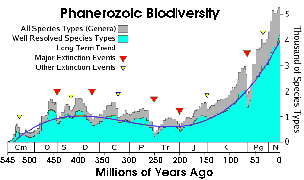
The Cambrian–Ordovician extinction event occurred approximately 488 million years ago. As stated previously, this early Phanerozoic Eon extinction event eliminated many brachiopods and conodonts, and severely reduced the number of trilobite species. It was preceded by the less-documented (but probably worse) End Botomian extinction event around 517 Ma, and the Dresbachian event at about 502 Ma. Combined, these combined extinction events were very serious and greatly affected the native life, and atmosphere on the planet.
Ordovician–Silurian extinction event
The Ordovician Period ended with the Ordovician–Silurian extinction event. This event occurred at about 443 Ma. It was a single cataclysmic event that wiped out a solid 60% of marine genera. (The reader must remember that the vast bulk of life on the planet at that time was marine life.)
It was the second-largest of the five major extinction events in Earth’s history in terms of percentage of genera that went extinct and second largest overall in the overall loss of life.
Between about 450 Ma to 440 Ma (million years ago), two pulses of extinction, separated by one million years, appear to have happened. During this extinction event there were several marked changes in biologically responsive carbon and oxygen isotopes. This complexity may indicate several distinct closely spaced events, or particular phases within one event.
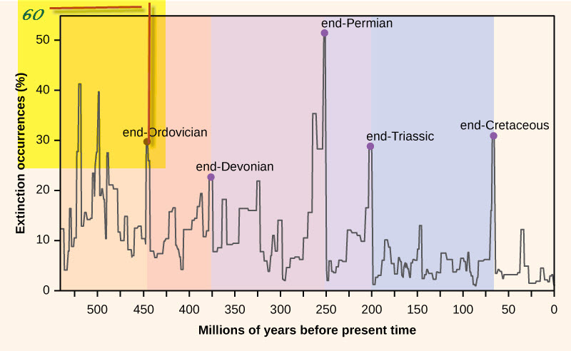
The previous belief, during the mid-1980’s into the early-1990’s, was that interstellar derived impact events, such as a meteor impact or impacts, caused this extinction period. But due to political concerns in the United States, perhaps to prevent funding sources from drying up, most of academia embraced the idea of “global warming” as the consequence of tectonic plate movement as the root cause of this (and other) extinction event(s).
Political Considerations
Therefore, in the interests of continued funding for those scientists who research these arcane matters, I must concur that the immediate cause of extinction appears to have been the movement of Gondwana into the South Polar Region. This led to global cooling, glaciation and consequent sea level fall. The falling sea level disrupted or eliminated habitats along the continental shelves.
In the United States, most research funding provided to universities and colleges originate out of governmental agencies. Very little funding is obtained from private concerns and industry. Thus, those who work at universities depend on funding grants (mostly through the government) to get paid. College and university pay scales are generally low, and professors use grants to supplement their income. Thus, depending on the political climate at the time, schools and universities will compete for grants that support whatever political philosophy is prevalent at the time. Ronald Reagan During the 1980’s under Ronald Reagan, a vast bulk of research was devoted to such programs as “Star Wars” ICBM laser defense system, NASP and the “Orient Express” space plane (Known as the “great laugh” by conventional liberal news media, the project went black and was forgotten until 2016 when it resurfaced publicly. Eventually picked up for public development elsewhere; Oxford's Reaction Engines Ltd (REL) announced it has received a €10,000 development contract with ESA, so it can work on its revolutionary Synergistic Air-Breathing Rocket Engine (SABRE). This technology can work both in the Earth's atmosphere and in space - which is crucial to space planes. The grant adds to the UK Government's commitment to invest £60 million in SABRE. The project has also seen investment from defense company BAE Systems and the US Air Force.) , and the “Freedom” Space Station. Bill Clinton During the Clinton Presidency, most funding sources changed in support of “Global Warming”, “Child Safety”, the dangers of breast implants and silicone, the dangers of Smoking, and other (now well known) initiatives. George Bush II Under the Bush II presidency, the shape of the grants became devoted towards projects designed to reduce the scope of Terror. As well as all sorts of developments toward military technology and crowd control technology and internet surveillance. Barrack Obama Meanwhile under the Obama administration it changed again to support initiatives related to “diversity”, “international cooperation”, global warming, and full-scale world surveillance. In support of these, the universities produced studies and findings concurrent with the desired political belief system at that time. Donald Trump Funding under Donald Trump was redirected towards political and weapons sciences. Studies in support of finding problems and rooting out trouble with China was funded lavishly. Examples include HK "pro-democracy" initiatives, and Uighur "studies". Additionally, there was an explosion in "black projects" related to military technologies. The problem with this is that professors and their students would doctor up research data, and provide fake findings in order to obtain a steady funding stream. Like below...

At this late date, it seems silly to parse the exact causes of the extinction events. But, actually, the more that we learn about the mechanisms of our solar system, the better we can understand ourselves. It is important.
Thus, whether the causes were extraterrestrial or due to a combination of terrestrial geologic processes should be given all consideration; within reason, and free of political considerations. (Regardless of one’s own political inclinations.)
Cephalopods – The first Individualized Souls on the Earth
All creatures have souls. Humans have a transitory soul that is being cultivated. Dogs and cats have hive / matrix souls (I am often confused by the differences). The Cephalopods have an individualized soul configuration.
As creatures evolved, they established formalized and discrete soul shapes. Most settled into basic and primitive forms. Many settled upon Hive, and Matrix forms. However, the Cephalopods, they had an associative individualized soul configuration. As such, they established an apparent “Heaven” and carved or brazed the way for subsequent evolution towards individualized soul forms.
Hive and Matrix soul configurations functionally dwell in both their Heaven and physical worlds simultaneously. That is great, but it is actually counter productive for soul and spiritual growth. Thus, for individualized soul constructs, we have a partitioning of the Heaven and the physical experiences. (Not all species have this, but we do.) This species; the cephalopods were the first individualized soul constructs in our planetary environment. This ability, the ability to partition the physical reality from the heavenly realities leads toward soul growth and construction ability. For now, we can consider the ability to grow, compose, engineer and repair souls into other things to be a sign of intelligence.
The reader might wonder why this kind of sea going creature would hold or develop an individualized soul. Well there are many reasons for this. But the reader must realize that the establishment of the physical attributes of a given physical creature would cause an associate adaptation of the soul quanta.
For the molluscan class Cephalopod, these exclusively marine animals are characterized by [1] bilateral body symmetry, a [2] prominent head, and a [3] set of arms or tentacles (muscular hydrostats) modified from the primitive molluscan foot. This combined with a [4] brain that recognized the concept of “self” was all that was necessary to develop into an individualized soul construct; later an archetype.
Nothing remains of them today. They evolved through to extinction. All that remains of them are (what I personally like to refer to as) the “quantum ruins” that exist on the discrete quantum levels. There were numerous subspecies and each one developed into their own soul configuration, with most of them being closely related in numerous ways.
Cephalopods Edit their own Genes to Faciliate Evolution
We now know that the species has edited their own DNA to evolve. Just when we thought octopuses couldn’t be any weirder, it turns out that they and their cephalopod brethren evolve differently from nearly every other organism on the planet.
These deep-sea cephalopods are well known for changing color to match their surroundings, thus evading predators and sneaking up on food sources. What the new findings prove is that the octopus' skin isn't just responding to instructions from the brain and eyes - it's actually reacting to light and changing color itself. It's all thanks to the chromatophores under the skin of an octopus: very small, pigmented organs packed with chemicals. As the muscles around them expand and contract, the colour they display changes. Thousands of these chromatophores are packed just below the top layer of skin. Go HERE.
In a surprising twist, scientists have discovered that octopuses, along with some squid and cuttlefish species, routinely edit their RNA (ribonucleic acid) sequences to adapt to their environment.
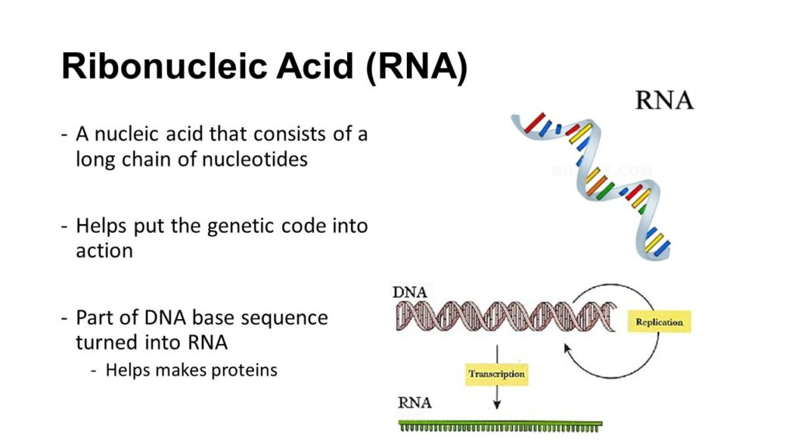
This is weird because that’s really not how adaptations usually happen in multicellular animals. When an organism changes in some fundamental way, it typically starts with a genetic mutation – a change to the DNA. This method is what is considered to be “typical”, and thus “normal”.
Those genetic changes are then translated into action by DNA’s molecular sidekick, RNA. You can think of DNA instructions as a recipe, while RNA is the chef that orchestrates the cooking in the kitchen of each cell, producing necessary proteins that keep the whole organism going. But RNA doesn’t just blindly execute instructions – occasionally it improvises with some of the ingredients, changing which proteins are produced in the cell in a rare process called RNA editing.
When such an edit happens, it can change how the proteins work, allowing the organism to fine-tune its genetic information without actually undergoing any genetic mutations. But most organisms don’t really bother with this method, as it’s messy and causes problems more often that solving them.
In 2015, researchers discovered that the common squid has edited more than 60 percent of RNA in its nervous system. Those edits essentially changed its brain physiology, presumably to adapt to various temperature conditions in the ocean. Now the team is back with an even more startling finding – at least two species of octopus and one cuttlefish do the same thing on a regular basis. To draw evolutionary comparisons, they also looked at a nautilus and a gastropod slug, and found their RNA-editing prowess to be lacking.
"This shows that high levels of RNA editing is not generally a molluscan thing; it's an invention of the coleoid cephalopods," -Joshua Rosenthal of the US Marine Biological Laboratory.
The researchers analysed hundreds of thousands of RNA recording sites in these animals, who belong to the coleoid subclass of cephalopods. They found that clever RNA editing was especially common in the coleoid nervous system.
"I wonder if it has to do with their extremely developed brains," -geneticist Kazuko Nishikura from the US Wistar Institute, who wasn't involved in the study, told Ed Yong at The Atlantic
It’s true that coleoid cephalopods are exceptionally intelligent.
- There are [1] countless riveting octopus escape artist stories out there.
- Not only that, but there is [2] evidence of tool use.
- There is [3] this eight-armed guy at a New Zealand aquarium who learned to photograph people. (Yes, really.)
Therefore, it’s certainly a compelling hypothesis that octopus smarts might come from their unconventionally high reliance on RNA edits to keep the brain going.
"There is something fundamentally different going on in these cephalopods," -Rosenthal.
Is there any doubt that these creatures were not the FIRST amblitory intelligences to occupy our Nursery World under the direction of the <redacted>? It’s not just that these animals are adept at fixing up their RNA as needed – the team found that this ability came with a distinct evolutionary tradeoff, which sets them apart from the rest of the animal world.
In terms of run-of-the-mill genomic evolution (the one that uses genetic mutations, as mentioned above), coleoids have been evolving really, really slowly. The researchers think that this has been a necessary sacrifice – if you find a mechanism that helps you survive, just keep using it.
"The conclusion here is that in order to maintain this flexibility to edit RNA, the coleoids have had to give up the ability to evolve in the surrounding regions - a lot," -Rosenthal
The findings have been published in Cell.
Significance of RNA Editing
Perhaps there is something else going on with the Cephalopods.
Instead of thinking that the Cephalopods have evolved in such a way to be able to edit their RNA, maybe what is going on is that their species “graduated” and were permitted to evolve into an approved archetype. As such, there is most certainly, a restructuring of DNA in both the physical realm as well as the non-physical realm.
I argue that this is exactly what happened with the Cephalopods. They have evolved to a point where their sentience was recognized and stable. As such, the entities that monitor this sentience nursery have permitted them to graduate. Those members of the species, ready to graduate, were reprogrammed genetically and are now a stable archetype.
Other Ideas
The following is from the article titled “The outer space octopus theory” written by Jazz Shaw and Posted at 8:41 pm on May 16, 2018 on HotAir.
A scientific study has been released offering the controversial claim that there’s a decent chance the octopus (and the rest of the cephalopods) arrived on Earth in the form of frozen eggs 250 million years ago and actually evolved on another world. (Express UK) The paper suggests that the explanation for the sudden flourishing of life during the Cambrian era – often referred to as the Cambrian Explosion – lies in the stars, as a result of the Earth being bombarded by clouds of organic molecules. But the scientists go on to make an even more extraordinary claim concerning octopuses, which seem to have evolved on Earth quite rapidly something like 270 million years ago, 250 million years after the Cambrian explosion… “One plausible explanation, in our view, is that the new genes are likely new extraterrestrial imports to Earth – most plausibly as an already coherent group of functioning genes within (say) cryopreserved and matrix protected fertilized Octopus eggs. “Thus the possibility that cryopreserved Squid and/or Octopus eggs, arrived in icy bolides several hundred million years ago should not be discounted as that would be a parsimonious cosmic explanation for the Octopus’ sudden emergence on Earth circa 270 million years ago.” This wasn’t the first group to suggest it. In 2015 another research group reached a similar conclusion. The more you read into it, the less crazy it sounds. As we’ve studied the various animals on the planet in ever deeper detail, the octopus really doesn’t seem to fit in with everything else. They’re an invertebrate, but they have 10,000 more protein-coding genes than a human being. They have problem-solving skills, they use tools and have been observed constructing a shelter out of things like broken coconut shells. (Not just using a shelter they find, the way crabs do, but actually building something.) And where did that instant camouflage ability come from? Their nervous system is almost entirely unique among animals. And they just don’t look right. Most of the animals you see on the land, in the water or in the air follow a basic pattern. There’s a central body with four protruding limbs and a head of some sort. Even the animals like snakes that don’t appear to have legs have vestigial limbs inside. The insects made the switch to six legs but the basic layout is still the same. (Don’t get me started on the centipedes. They’re probably from another world also.) And then there are the cephalopods. Eight to ten limbs sticking out of a central mass with a huge brain, eyes with structures resembling a camera (like ours, actually) and a host of other differences. If you happen to be a fan of the theory of panspermia, is it really such a crazy idea? Dormant cells get blown out into space on some other planet, hitch a ride on some rocks and debris and survive in a dormant state until they crash land someplace else where they can take root. Maybe that explains why the octopus is just so darn weird.
In any event, if you want to amuse yourself for a couple of minutes, check out some of these GIF’s. It’s beyond amazing.
The Amazing Cephalopods
Using a bowl as a kind of mobile home…
Being able to camouflage themselves expertly…
Unscrewing a jar from inside…
Going for a little walk…
Crawling out of the water to attack a crab and returning back to the water…
Communicating…?
Being able to change size to scare away predators…
Defending itself from a shark by making a “suit of armor” out of shells…
Using the poisonous stingers of a jellyfish as a weapon…
Surviving an attack by a shark and then squirting ink during the “get away”…
Using ink to blind an attacking creature…
Another instance of pulsating skin coloration…
And in conclusion, here we have a cephalopod solving Rubkic’s cube…
Conclusions
Cephalopods is one of numerous species who has evolved on earth. They, like humans, evolved through a period of individualized soul construction until they eventually developed sentience. With this came the development of an approved archetype.
Today, we can see what an approved archetype looks like for this species. We can also see what unapproved archetypes looked like in some of their ancestors who no longer exist on this planet.
Take Aways
- Cephalopods are one of numerous intelligent species who has evolved on earth.
- They have edited their RNA.
- They demonstrate some amazing abilities that are currently beyond human technology to accomplish.
- They have an individualized soul construction that has adopted and evolved into an approved archetype.
FAQ
Q: Where do humans fit in with all this?
A: We don’t. On the earth, various species have evolved, and advanced. Others have died out. Still others obtained intelligence and sentience. We, humans, are late comers to this process. For us, we do not possess a unified sentience. This is problematic for our species.
Having different sentience’s, mean that we possess differing “Heavens”, or a tendency for our non-physical realms to segregate in difficult ways. To use a Christian reference, “Service to Self” sentience’s would tend to migrate to a Heaven (upon physical death) filled with other selfish people. While those with “Service to Other’s” sentience would migrate to a Heaven filled with others of a similar sentience. Depending on your point of view, one person’s Heaven is another person’s Hell.
Disrupted and disjointed sentience’s are problematic in the non-physical reality. As they are never fully able to participate in the “activities” and “benefits” within the non-physical realm.
Of course, my descriptions herein are quite simplistic. It is not that black and white. It is actually a very complex and complicated situation. However, to simplify, let me make a very simple point perfectly clear. One’s sentience helps establish one’s activity and role within the non-physical realm. (Or Heaven, for those of you are spiritually inclined.)
Q: What happens to members of a species that do not “graduate” into a new archetype?
A: They stagnate. Eventually devolving, or ending up on a dead-end evolutionary track, or evolving into a totally different species all together. In the case of the Cephalopods, members of the species that did not fall into an approved sentience and archetype eventually die off like the Ammonoidea (ammonites) and Belemnoidea (belemnites).
Q: What species monitors our planet and assist in sentience selection and advancement into approved and stable galactic archetypes?
A: This species is the <redacted>. They are a pretty ancient species compared to humans, and might be the oldest species that humans have interacted with. they are invertebrates, and possess an understanding and control of our reality that far exceeds anything that we humans can comprehend. They operate outside the sphere of our reality, but are fundamentally an integral part of our lives.
I suppose the more religious reader might consider them to be akin to “angels” in the Biblical sense. However, their appearance differs from common public perception. They tend to be much larger than humans, and are quite impressive in ability.